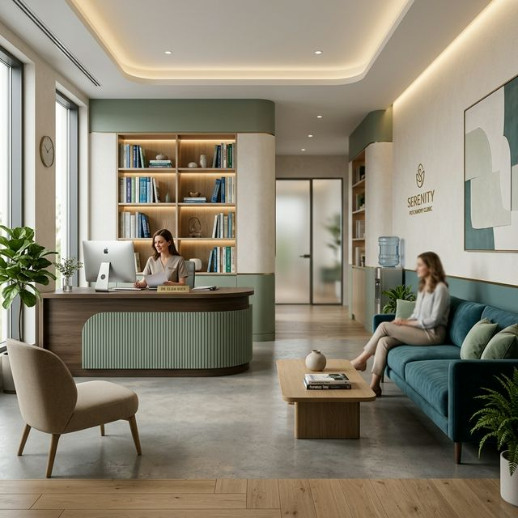

Nossas Especialidades
Tratamentos modernos e humanizados para o equilíbrio da sua saúde mental.

Especialidade Core
Psiquiatria Clínica Adulto
Atendimento focado no diagnóstico e tratamento de transtornos mentais em adultos. Utilizamos protocolos atualizados para garantir a melhor resposta terapêutica com o mínimo de efeitos colaterais.
- Depressão e Ansiedade
- Transtorno Bipolar
- Síndrome do Pânico
- burnout e Estresse
Tecnologia Avançada
Neuromodulação Não Invasiva
Oferecemos técnicas de ponta como a Estimulação Magnética Transcraniana (EMT) e a Estimulação por Corrente Contínua (tDCS), indicadas para depressão resistente e dores crônicas.
- Sem sedação
- Não invasivo
- Alta eficácia
- Baixo efeito colateral
Desenvolvimento
Psiquiatria da Infância e Adolescência
Um olhar cuidadoso sobre o desenvolvimento neuropsicomotor e emocional. Trabalhamos em conjunto com a escola e a família para proporcionar o melhor suporte à criança.
- TDAH
- Autismo (TEA)
- Distúrbios de Aprendizagem
- Oposicionismo